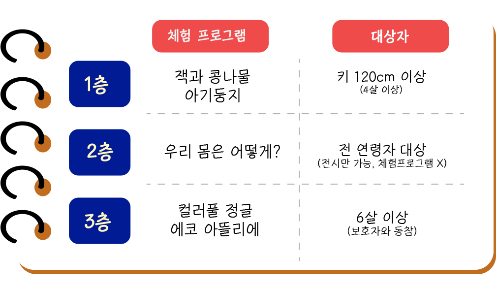
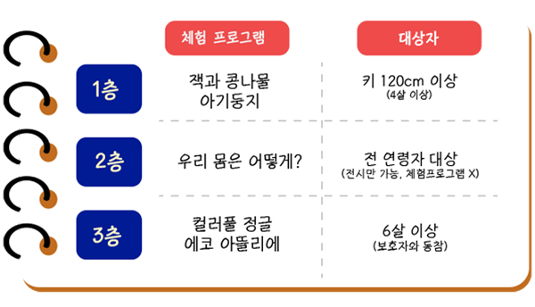
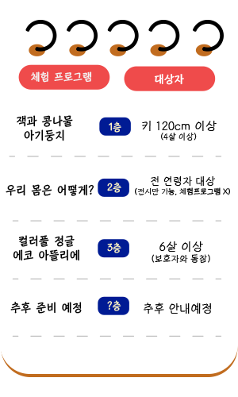

우리들의 쉼터!
경기도
어린이 박물관
월요일,공휴일 제외 am 9:00 ~ pm 10:00
우리들의 쉼터!
경기도
월요일,공휴일 제외 am 9:00 ~ pm 10:00
단체예매
단체티켓 구매
개인예매
개인티켓 구매
잔여티켓
실시간 보기
"엄마, 내친구들은 전부 어린이박물관 다녀왔데."
체험도 하고 놀이도 하는 일석이조 시스템 지금 바로 예매하세요!!
▲컬러풀 정글 프로그램 바로가기 클릭▲




| 마포09 | 망원유수지, 망원한강공원, 태양식당 하차 | |
|---|---|---|
| 마포16 | 신태양 목욕탕, 망원교회 하차 | |
| 6호선 | 망원역 1번 출구(마포09, 마포16버스) | |
| 2호선 | 합정역 1번 출구(마포09, 마포16버스) |
| 2221 | 2415 | 신자초등학교 앞 하차 | |
|---|---|---|---|
| 2014 | 자양 4동 차고지 하차 | ||
| 7호선 | 7호선 뚝섬유원지역 2, 3번 출구(20m) | ||
| 2호선 | 건대역 3번 출구(1,000m) |
| 10 | 261 | 360 | 461 | 753 | 여의나루역 하차 | |
|---|---|---|---|---|---|---|
| 262 | 5534 | 5628 | 7611 | 여의도 중학교 하차 | ||
| 5호선 | 여의나루역 2,3번 출구 | |||||
| 9호선 | 여의도역 1번 출구 |
| 강동02 | 선사마을/선사초등학교/고덕주유소 하차 | ||
|---|---|---|---|
| 5호선 | 8호선 | 천호역 1번 출구(500m) | |
| 8호선 | 암사역 4번 출구(700m) |